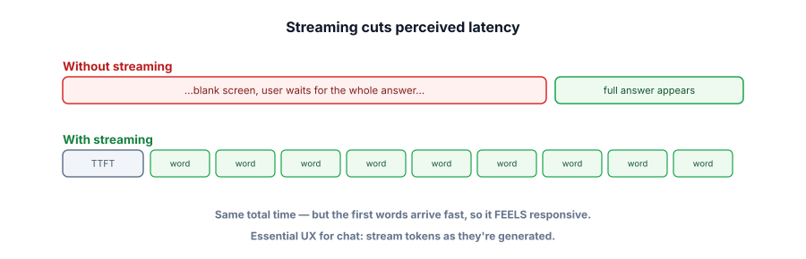

Streaming
A model writes its answer one token at a time.
Without streaming, your app waits for the very last token, then shows everything at once.
With streaming, each token is sent to the screen the moment it is written.
The answer takes just as long to finish, but the user starts reading almost at once.
The number users feel is TTFT (time to first token): how long until the first word appears.
Imagine ordering a pizza where the shop waits until all eight slices are cut, boxed and driven over before you see anything. Now imagine the cook handing you each slice the moment it is ready. You get the whole pizza at the same time either way, but in the second case you are eating after one minute instead of staring at the door.
| In the picture | In the real system |
|---|---|
| The cook finishing a slice | The model producing the next token (decode) |
| Handing each slice over as soon as it is ready | Forwarding each chunk to the browser as a server-sent event (SSE) |
| Getting the first slice after one minute | Time to first token, mostly the prefill time |
| The whole pizza arriving at the same time either way | Total generation time is unchanged; only when you see it changes |
| A half-cut box nobody can use | JSON or a tool call: code needs the whole thing, so don't stream to a parser |
Where the picture breaks. A pizza slice is useful alone, but a half-finished JSON object or SQL query is not, which is why machines usually want the whole box.
Move the sliders for prefill time, generation speed and answer length. The top lane waits for the end; the bottom lane streams. The times are computed from your settings, which are illustrative.
Going deeper
The cheapest, highest-impact latency improvement doesn’t make the model faster at all — it just shows the user the words as they’re generated. Streaming is the difference between a chat that feels instant and one that feels broken, and it’s a few lines of code.
Perceived latency is what users feel
Recall that the model generates one token at a time (decode). Without streaming, you wait for the entire answer, then show it all at once — so a 5-second response is 5 seconds of blank screen. With streaming, you display each token the moment it’s produced, so the first words appear almost immediately and the rest flow in. The total time is identical, but the perceived latency — how slow it feels — drops dramatically, because the user sees progress instead of a frozen screen.

Streaming sends the model’s output token by token as it’s generated, rather than waiting for the whole response. Time to first token (TTFT) is how long until the first word appears — the number users actually feel. Perceived latency is the felt slowness, which streaming reduces even though total generation time is unchanged. Technically it’s delivered over a streaming transport (server-sent events or websockets).
Feel the difference
Stream vs. wait
Both produce the same answer in the same total time. One feels far better.
Streaming is usually a single flag. Iterate over chunks and print as they arrive.
import ollama
stream = ollama.chat(
model="qwen2.5:7b",
messages=[{"role": "user", "content": "Explain streaming in two sentences."}],
stream=True, # the whole trick
)
for chunk in stream:
print(chunk["message"]["content"], end="", flush=True) # show each token as it arrives
# In a web app, push each chunk to the browser via Server-Sent Events (SSE) or a websocket.Almost every model API and runtime supports a streaming mode like this. For any chat-style UI, it should be your default.
Assumptions (ours, illustrative): 100,000 requests in the busiest hour, answers average 600 tokens, TTFT 0.8 s, decode 50 tokens/s per stream. Measure your own numbers; these are round figures to show the method.
- Without streaming. Decode takes 600 / 50 = 12 s, plus 0.8 s TTFT. The user stares at a spinner for 12.8 s, and many will assume it broke.
- With streaming. First words at 0.8 s. Total time is still 12.8 s, but the user is reading from 0.8 s on.
- Does the stream outrun the reader? Assume a fast reader at about 250 words a minute, roughly 4 words or about 5-6 tokens a second. 50 tokens/s is about 9x faster than reading, so the reader never catches up with the text. Streaming hides almost all decode time.
- How many open connections must the server hold? Use Little's law: concurrency = arrival rate x time in system. 100,000 / 3,600 s = 27.8 requests/s, each held open 12.8 s, so about 356 concurrent streams. Your web tier, proxy and load balancer must allow that many long-lived SSE connections, and their idle timeouts must be longer than your slowest stream.
- Safety checks need a plan. Output moderation wants full text. A common compromise: moderate each completed sentence before releasing it, which adds a buffer of one sentence (maybe 20-30 tokens, under 1 s at 50 tokens/s), and keep a retract path if the final check fails.
- Measure the right number. Log TTFT and total time separately per request. On OpenTelemetry's GenAI conventions the streaming attribute is gen_ai.response.time_to_first_chunk; p95 TTFT is the number to alert on.
Streaming shines for human-read text. It’s pointless (or harmful) when the consumer is code: if you’re parsing a JSON response or a tool call, you need the whole thing before you can use it, so streaming just adds complexity. Stream for chat and long-form answers; collect-then-parse for structured output and machine consumption.
- Streaming shows tokens as they’re generated — same total time, far lower perceived latency.
- TTFT (time to first token) is the number users actually feel; streaming makes it the whole experience.
- It’s usually a single flag (
stream=True) plus pushing chunks to the client (SSE/websockets). - It doesn’t reduce cost or total time — it improves the felt experience.
- Default to streaming for chat; don’t stream when you need to parse the whole output (JSON, tool calls).
Your boss says “the model is too slow — make it generate faster” after seeing a 4-second wait in the chat UI. The model speed is fixed (it’s an API). What do you do?
Streaming doesn't change total time, so why does it feel faster?
Your streaming chat endpoint works on your laptop but in production long answers cut off after about a minute with no error from the model. What is the most likely cause?
1. Explain why streaming reduces perceived latency but not total time or cost.
2. You’re building an endpoint that returns a JSON object your frontend parses. Should you stream the model’s output to your server logic? Why?
3. Besides streaming, name two ways to reduce the time before the user sees the first useful token.
▸ Show solutions & reasoning
1. The model still generates the same number of tokens in the same time and you still pay for them — streaming only changes when you display them. Instead of buffering the whole answer and showing it at the end, you reveal each token immediately, so the user perceives a fast start and continuous progress. Felt speed improves; the underlying work and bill don’t.
2. No — your server needs the complete JSON to parse it, so streaming buys nothing and adds complexity (you’d just reassemble the chunks before parsing anyway). Streaming is for human-read text; for machine-consumed structured output, collect the full response, then validate and parse it (Track 2.4). (You might still stream to the browser if a human reads part of it, but not to parsing logic.)
3. (a) Shorten the prompt — prefill is faster, so TTFT drops (a long prompt delays the first token). (b) Use a faster/smaller model (or route easy queries to one). Both attack TTFT directly; streaming then makes that fast first token the whole felt experience. (Bonus: caching can make some responses instant.)
Streaming is one instance of a broader UX principle: perceived performance often matters more than raw speed, and you can engineer it. Beyond token streaming, mature LLM apps reduce felt latency with progressive disclosure — show a “thinking…” state, then stream the answer; surface intermediate steps of an agent as they happen (the trace from Track 4) so the user sees work being done; and render partial structure (e.g., start showing a list as items stream).
The goal is to never leave the user staring at a frozen screen wondering if it broke. A 6-second response that streams from the first second feels responsive; a 2-second response that shows nothing until the end can feel slow and even appear hung.
There’s an engineering caveat to plan for: once you stream, you’ve started showing output before you’ve seen all of it — which complicates anything that needs the whole response. Output moderation (Track 7) and validation typically need the complete text, so a common pattern is to stream to the UI optimistically but be ready to retract/replace if a post-generation safety check fails, or to moderate in a way that can interrupt the stream.
For structured output you simply don’t stream to the parser. So the rule of thumb: stream human-facing prose by default for the big UX win, but keep machine-consumed and safety-gated paths on a collect-then-process model. Used this way, streaming is the rare optimization that’s nearly free, dramatically improves the experience, and ships in an afternoon.
labs/01_generate_and_sample.pyFree and offline once set up: Ollama with qwen2.5:7b, plus the packages in labs/README.md. From the course folder:
python labs/01_generate_and_sample.pyWhat to look for: The lab streams from Ollama and prints time-to-first-token and tokens/sec separately. Compare TTFT with total time: the gap between them is the wait streaming hides from the user. Ask for a 50-word answer and then a 500-word answer; TTFT barely moves while total time grows roughly in step with eval_count.
Small samples: these labs use 5 to 20 cases so they run in minutes on a laptop. Where they report a rate, they print n and a 95% Wilson interval. Read them as a demonstration of the mechanism, not as a measured rate for your system; for that you need hundreds of cases and several seeds.
▸ Recorded output (our run, 2026-11-03, qwen2.5:7b on a laptop GPU)
2) Same prompt, temperature 1.0, three different seeds
seed=1: Bengaluru in July typically experiences warm to hot temperatures with occasional thunderstorms.
seed=2: Bengaluru in July typically experiences hot and humid weather with occasional thunderstorms.
seed=3: Bengaluru in July typically experiences hot and dry weather with temperatures often soaring above 30°C.
distinct outputs at T=1.0: 3 (sampling -> usually 2-3)
3) Same seed twice at T=1.0 -> reproducible on the same machine
identical: True
4) Tokens are what you pay for: prompt vs output token counts
short prompt: prompt_tokens= 36 output_tokens= 2 prefill_s= 0.52 answer='Paris'
long prompt : prompt_tokens= 639 output_tokens= 2 prefill_s= 0.22 answer='Paris'
Look: the long prompt costs many more input tokens and more prefill time for the same answer.
5) Streaming: time-to-first-token (TTFT) vs total time
TTFT=0.36s total=2.54s chunks=16 decode_tokens_per_s=7.3
Look: streaming does not make generation faster; it shows the first words sooner.Your numbers will differ a little run to run. Full log: labs/outputs. Source: labs/01_generate_and_sample.py.
Warm-up. An answer is 900 tokens, TTFT is 1.2 s and decode runs at 45 tokens/s. How long does the user wait before seeing anything, with and without streaming?
▸ Solution
Decode: 900 / 45 = 20 s. Without streaming the user sees nothing for 1.2 + 20 = 21.2 s. With streaming the first words appear at 1.2 s. Same total, but the blank wait drops by about 94%.
Transfer. You expose a tool-calling agent to a browser. The model streams, but tool-call arguments arrive as partial JSON fragments. How do you stream to the user and still execute tools safely?
▸ Solution
Split the stream by content type. Text deltas go straight to the browser. Tool-call deltas are buffered on the server until the provider signals the tool-use block is complete; only then parse the JSON, validate it against the tool's schema, and run the tool (with any approval gate). Meanwhile send the browser a status event like 'looking up your order' so the user sees progress. The why: humans can read partial text, but code cannot act on partial arguments, so you stream for people and collect-then-parse for machines inside the same response.
Stretch. Using Little's law, size your streaming tier: peak 60 requests/s, average stream duration 15 s, and each server process can hold 500 open streams comfortably. How many processes do you need with 30% headroom, and what changes if you cut average answer length by a third?
▸ Solution
Concurrency = 60 x 15 = 900 open streams. With 30% headroom: 900 x 1.3 = 1,170, so 1,170 / 500 = 2.34, round up to 3 processes. If answers are a third shorter and decode dominates duration, streams last about 10 s: 60 x 10 x 1.3 = 780, which still needs 2 processes (780 / 500 = 1.56). The lesson: output length drives not just cost and latency but how many connections you hold open, so it shapes infrastructure too.
Junior What is the difference between time to first token and total latency, and which does streaming improve?
▸ Model answer
Time to first token is how long until the first piece of the answer arrives; it is mostly the model reading the prompt (prefill) plus any queueing. Total latency adds the time to generate every output token (decode). Streaming does not change either number at the server. What it changes is when the user sees text: with streaming they start reading at TTFT instead of waiting for the full total. So streaming improves perceived latency, and if I want a lower TTFT itself I shorten the prompt, cache the prefix, or use a faster model.
Mid How would you implement streaming from an LLM through a FastAPI backend to a React front end?
▸ Model answer
On the backend I call the provider with streaming on and wrap the iterator in a StreamingResponse with the text/event-stream media type, yielding one SSE event per text delta and a final event with usage and finish reason. I use an async client so one worker can hold many streams. On the front end I read the stream with EventSource or fetch and a reader, appending deltas to state. I handle disconnects by cancelling the upstream call so I stop paying for tokens nobody will read, and I log TTFT and total time per request.
Senior When would you deliberately not stream, even for a user-facing feature?
▸ Model answer
When the output must be checked before anyone sees it, and a retraction would be worse than a wait. Examples: regulated advice where every answer must pass a compliance check, a reply that will be sent to a customer by email, or structured output a UI renders as a form. I also skip streaming for machine consumers: JSON, tool calls and SQL need the whole object. Middle grounds exist: stream a status or a progress bar, or release text sentence by sentence after a fast check. The decision is a trade between perceived speed and the cost of showing something wrong.
Streaming makes responses feel instant. The next technique can make some responses actually instant — and free. Next: caching.
In one line: Streaming doesn't make the model faster; it lets people start reading sooner.